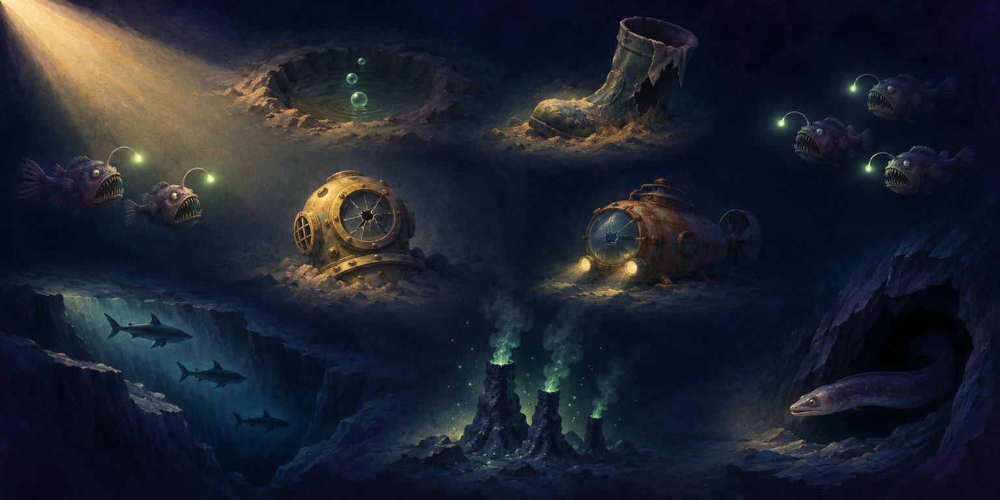

Stufe wählen
Was flüstert aus der Spalte?
Wählt zuerst eine Stufe. Dann beginnt euer Abenteuer am Blasenkrater.
Ihr könnt die Stufe jederzeit ändern. Euer Weg bleibt erhalten.
Tipp: An manchen Orten sehen die Zeichen ähnlich aus. Zählt genau!